Penalties & Decisions
A published Azerbaijan ruling applies to this event; Bahrain-specific decisions remain source-dependent.
Sources: FIA Document 66; Formula1.com penalty report; Formula1.com event guide.
| Doc | Driver | Session | Matter | Ruling |
|---|---|---|---|---|
| Doc 15 | Lando Norris; Oscar Piastri; Lance Stroll; Gabriel Bortoleto; George Russell; Kimi Antonelli; Oliver Bearman; Esteban Ocon | Free Practice 1 | The F1 Cars below did not use the track at turns 1, 3, 4, 11 and 14. | Note Deletion of the lap times shown in accordance with Article 12.4.1.e of the FIA InternationalView FIA decision — 2 pagesOriginal FIA PDF. Retrieved 2026-10-03T22:34:19+00:00 (not the issue date). 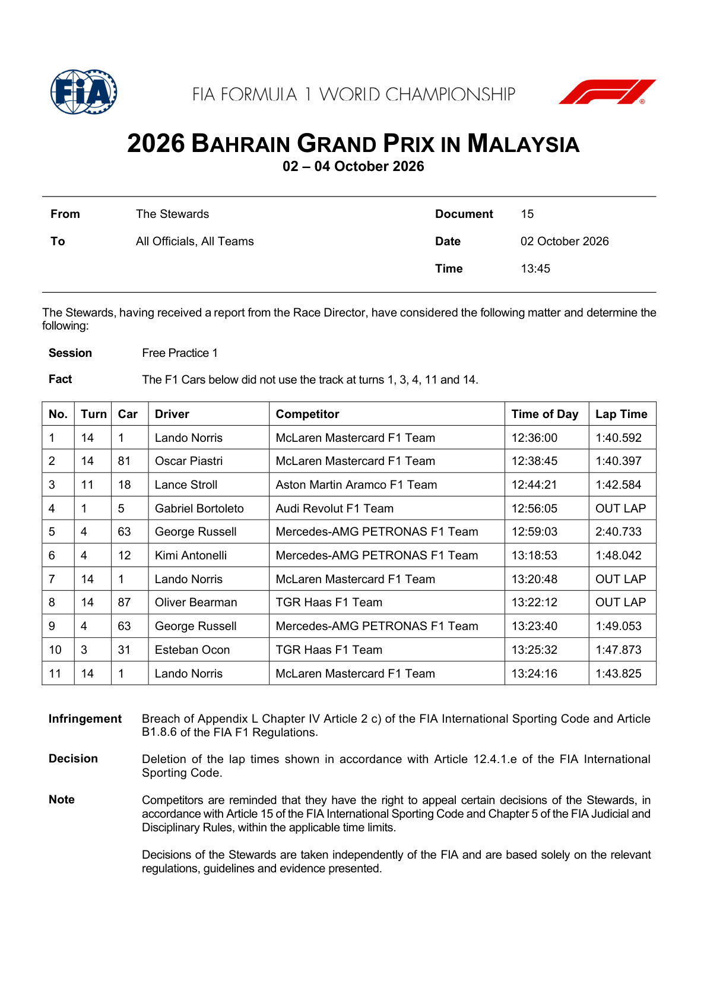 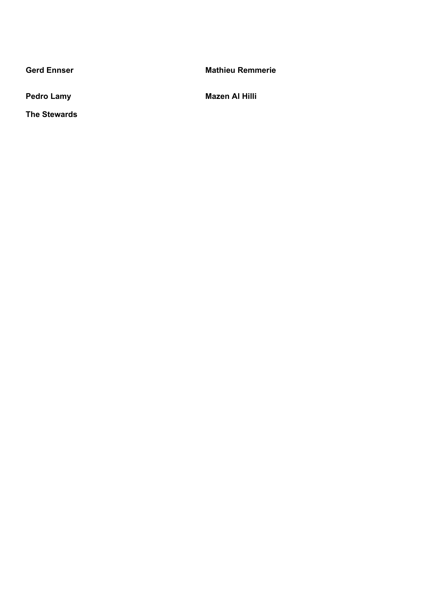 |
| Doc 17 | Isack Hadjar #6 Oracle Red Bull Racing | Free Practice 1 | The following Power Unit element have been used: | Penalty Drop of 5 grid positions for the next Race in which the driver participates.View FIA decision — 1 pageOriginal FIA PDF. Retrieved 2026-10-03T22:34:19+00:00 (not the issue date). 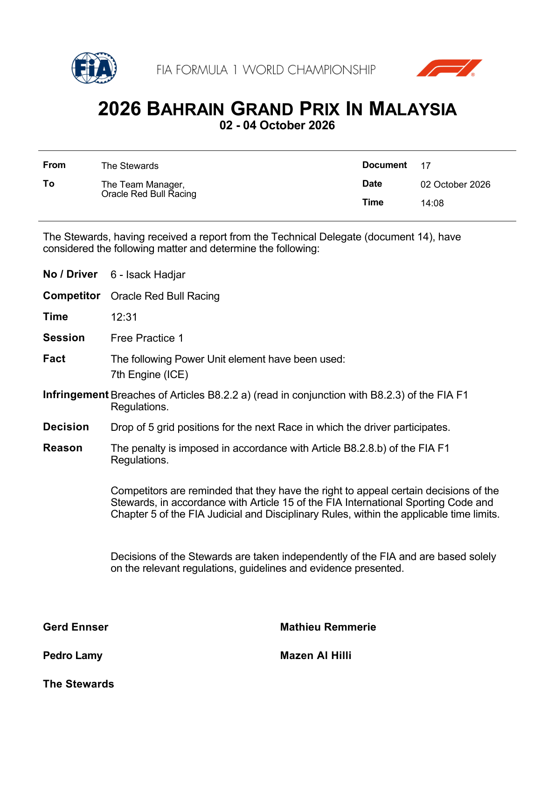 |
| Doc 18 | Franco Colapinto #43 BWT Alpine F1 Team | Free Practice 1 | The following Power Unit elements have been used: | Penalty Drop of 10 grid positions for the next Race in which the driver participates.View FIA decision — 1 pageOriginal FIA PDF. Retrieved 2026-10-03T22:34:19+00:00 (not the issue date). 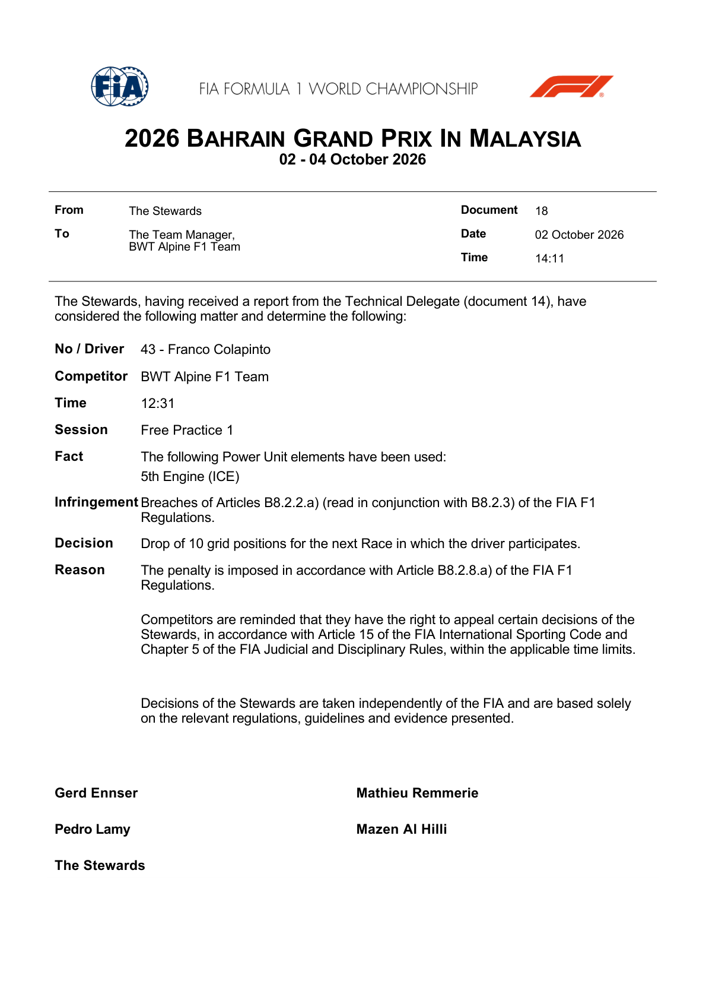 |
| Doc 19 | Arvid Lindblad #41 Visa Cash App Racing Bulls F1 Team | Free Practice 1 | The following Power Unit elements have been used: | Penalty Drop of 30 grid positions for the next Race in which the driver participates.View FIA decision — 2 pagesOriginal FIA PDF. Retrieved 2026-10-03T22:34:19+00:00 (not the issue date). 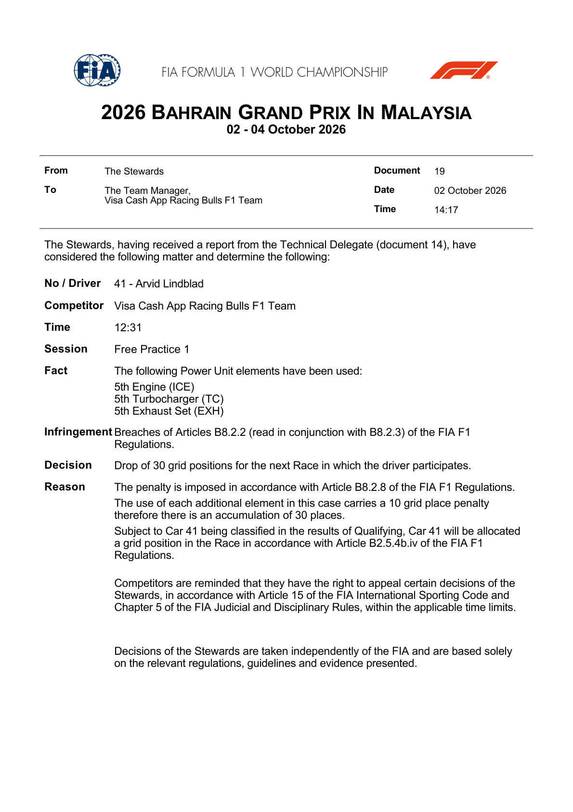 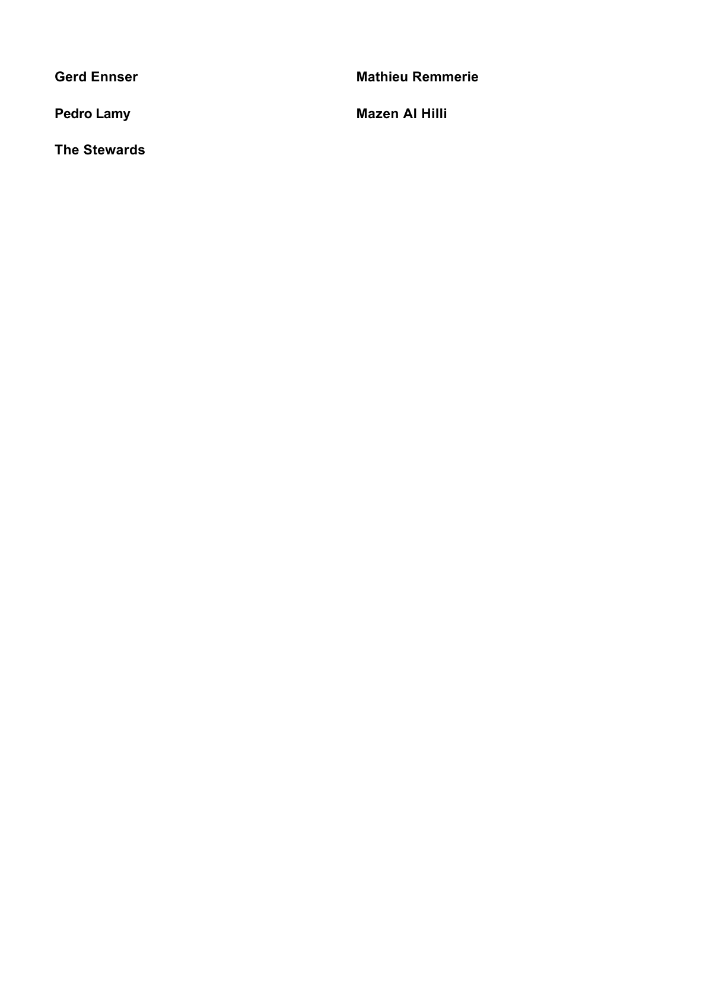 |
| Doc 23 | Lance Stroll; Sergio Perez; Arvid Lindblad; Pierre Gasly; Kimi Antonelli; Valtteri Bottas; Liam Lawson; Oliver Bearman; Gabriel Bortoleto; Carlos Sainz; Fernando Alonso | Free Practice 2 | The F1 Cars below did not use the track at turns 1, 3, 6, 7, 8 and 14. | Note Deletion of the lap times shown in accordance with Article 12.4.1.e of the FIA InternationalView FIA decision — 2 pagesOriginal FIA PDF. Retrieved 2026-10-03T22:34:19+00:00 (not the issue date). 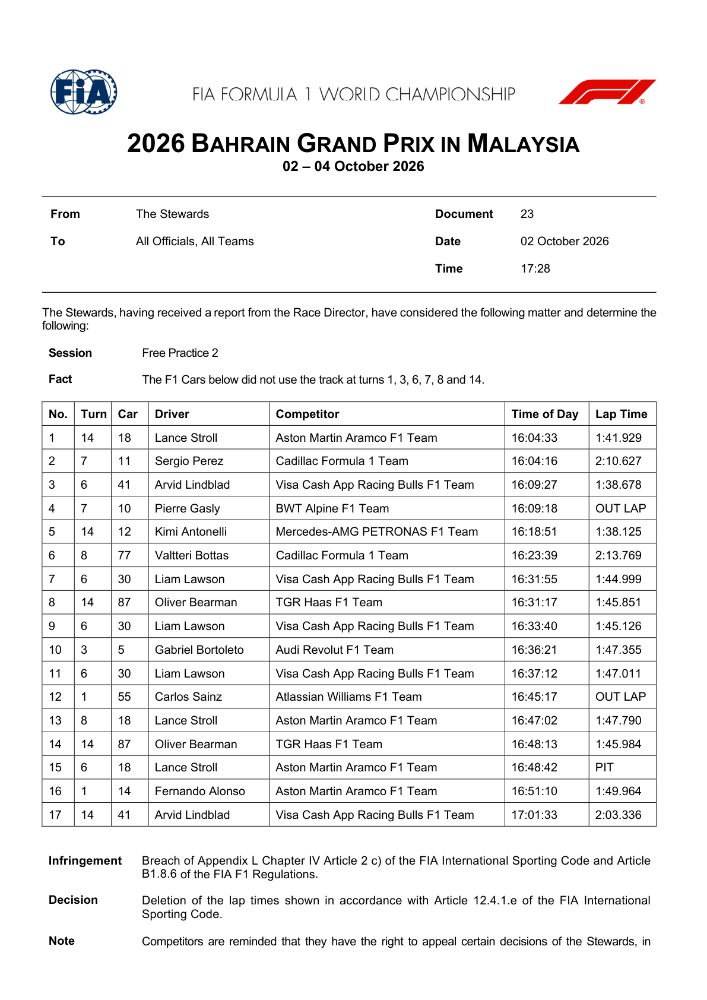 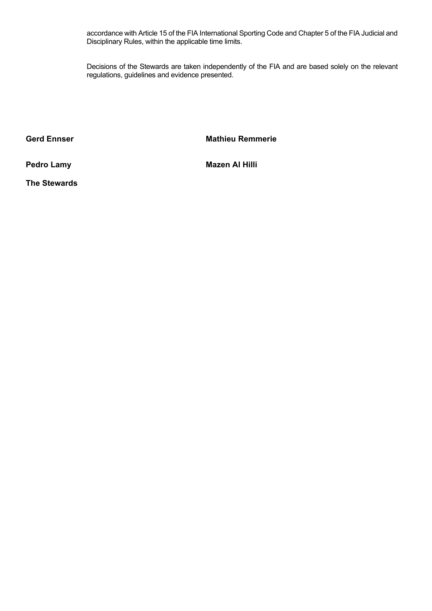 |
| Doc 26 | Lewis Hamilton #44 Scuderia Ferrari HP | Free Practice 2 | Car 44 unnecessarily impeded Car 5 on the entry to Turn 9. | Warning Driver: Warning.View FIA decision — 2 pagesOriginal FIA PDF. Retrieved 2026-10-03T22:34:19+00:00 (not the issue date). 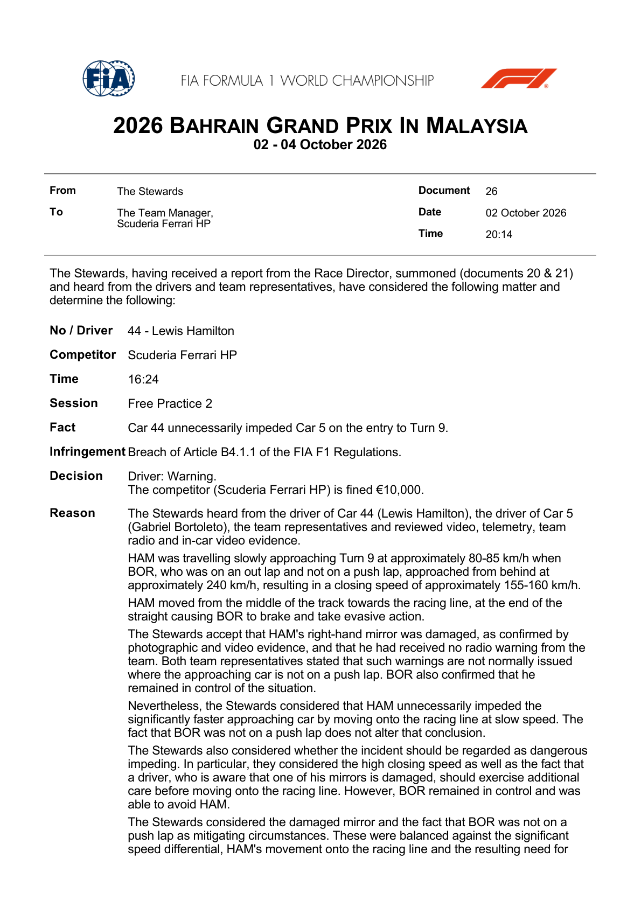 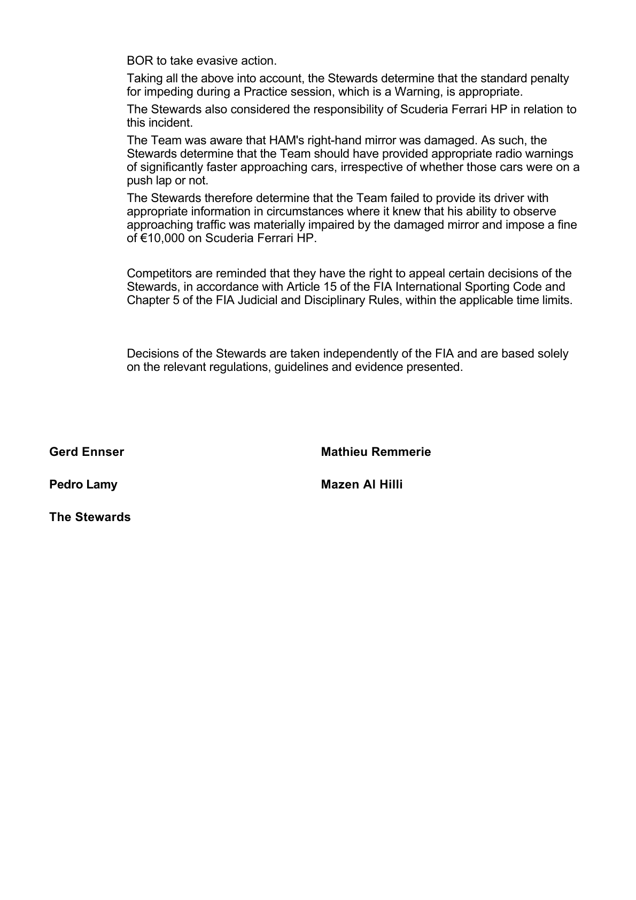 |
| Doc 32 | Lance Stroll; Gabriel Bortoleto; Arvid Lindblad | Free Practice 3 | The F1 Cars below did not use the track at turns 7, 8 and 14. | Note Deletion of the lap times shown in accordance with Article 12.4.1.e of the FIA InternationalView FIA decision — 1 pageOriginal FIA PDF. Retrieved 2026-10-03T22:34:19+00:00 (not the issue date). 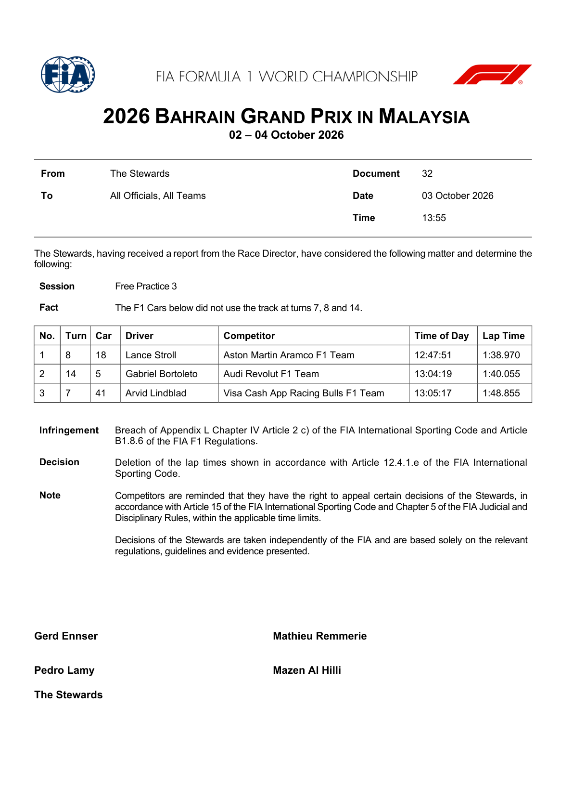 |
| Doc 36 | Oliver Bearman; Kimi Antonelli; Pierre Gasly | Qualifying | The F1 Cars below did not use the track at turns 6 and 15. | Note Deletion of the lap times shown in accordance with Article 12.4.1.e of the FIA InternationalView FIA decision — 1 pageOriginal FIA PDF. Retrieved 2026-10-03T22:34:19+00:00 (not the issue date). 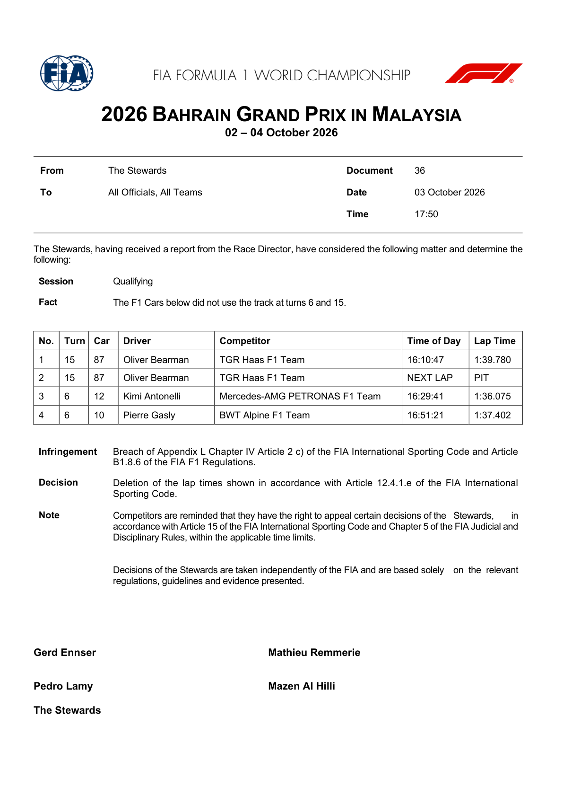 |
| Doc 38 | Lance Stroll; Franco Colapinto | Qualifying | The F1 Cars below exceeded the 1:59.0 time limit between the Safety Car lines. | No action No further action.View FIA decision — 1 pageOriginal FIA PDF. Retrieved 2026-10-03T22:34:19+00:00 (not the issue date). |
| Doc 39 | Lance Stroll; Franco Colapinto | Qualifying | The F1 Cars below exceeded the 1:59.0 time limit between the Safety Car lines. | No action No further action.View FIA decision — 1 pageOriginal FIA PDF. Retrieved 2026-10-03T22:34:19+00:00 (not the issue date). 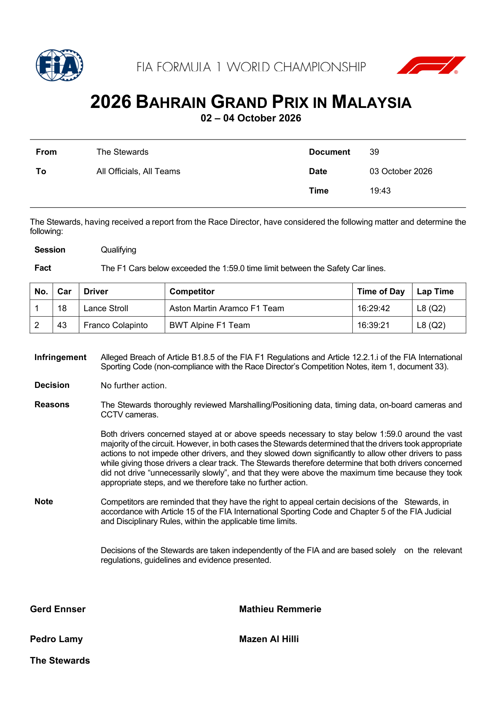 |
| Doc 40 | Lance Stroll #18 Aston Martin Aramco F1 Team | Qualifying | Car 18 exceeded the 1:59.0 time limit between the Safety Car lines. | Warning Driver: Warning.View FIA decision — 2 pagesOriginal FIA PDF. Retrieved 2026-10-03T22:34:19+00:00 (not the issue date). 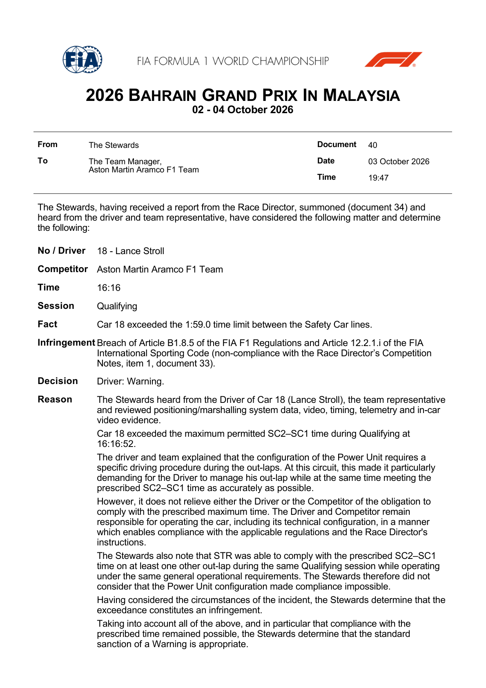  |
| Doc 41 | Lance Stroll #18 Aston Martin Aramco F1 Team | Qualifying | Car 18 exceeded the 1:59.0 time limit between the Safety Car lines. | Warning Driver: Warning.View FIA decision — 2 pagesOriginal FIA PDF. Retrieved 2026-10-03T22:34:19+00:00 (not the issue date). 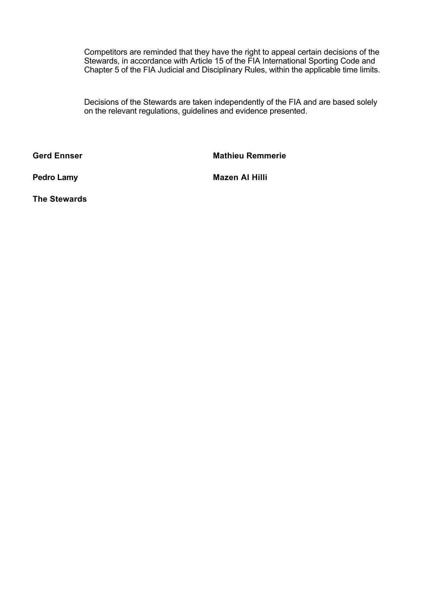 |
| Azerbaijan Doc 66 | Franco Colapinto #43 BWT Alpine F1 Team | Azerbaijan Grand Prix — Race | Turn 1 collision with team-mate Pierre Gasly. | Penalty 10-second time penalty converted to five grid places at the next race in which the driver participates.View FIA decision — 2 pagesOriginal FIA PDF. Retrieved 2026-10-03T22:34:31+00:00 (not the issue date). 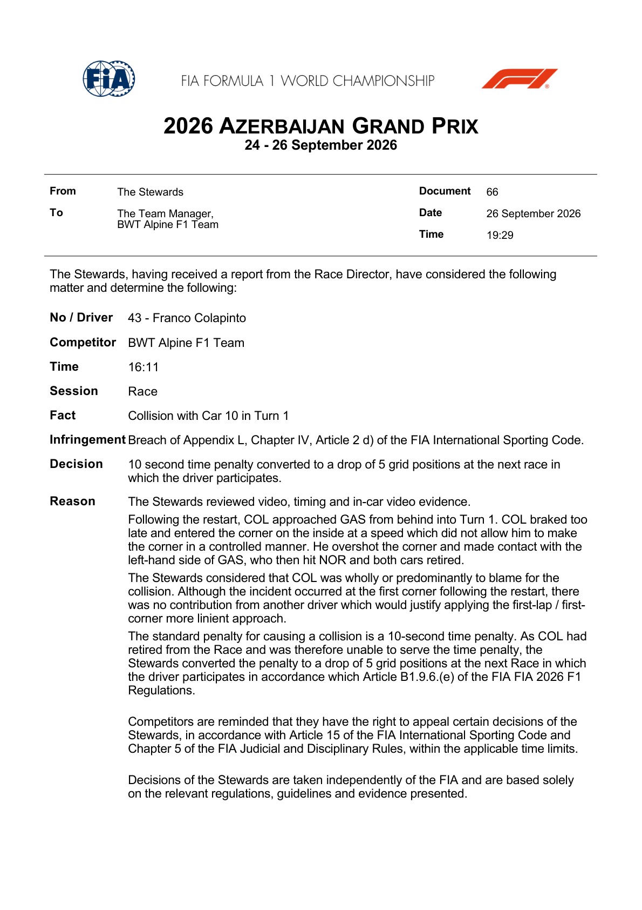 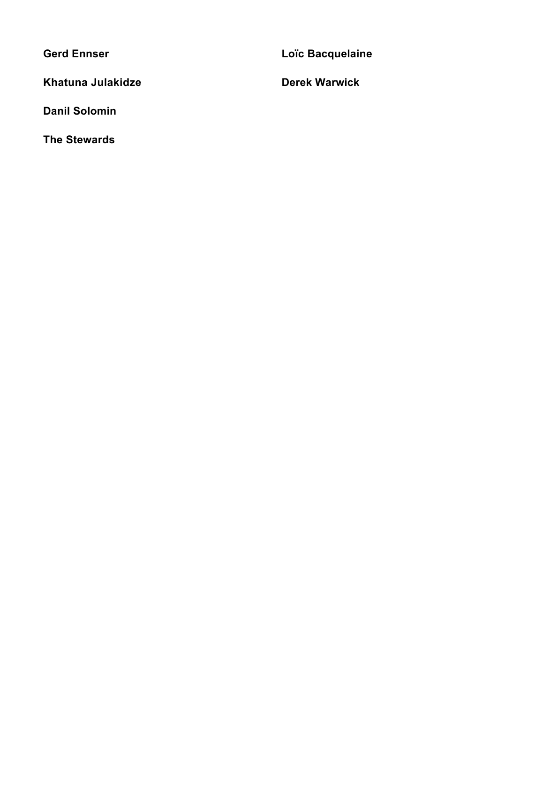 |
Source: FIA — Bahrain Grand Prix documents (stewards' decisions).
Event officials: stewards Gerd Ennser, Mathieu Remmerie, Pedro Lamy and Mazen Al Hilli; Race Director Rui Marques. FIA Competition Visa, Document 13, V2. Publication of a compliance report or a heat declaration does not make it a driver penalty.